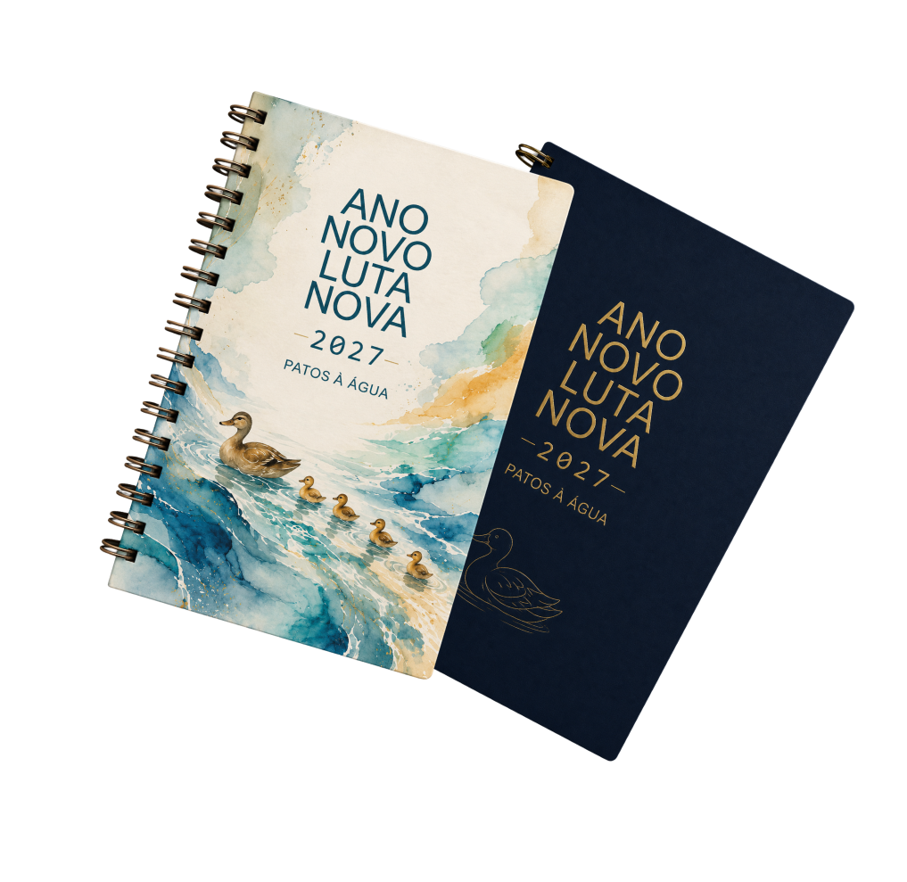
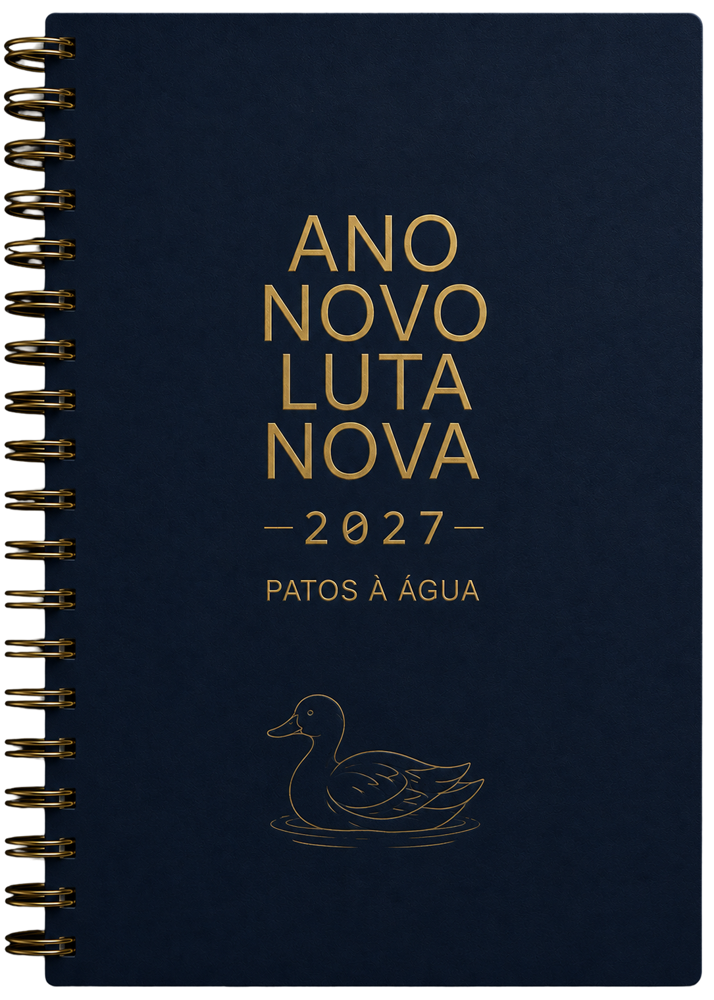
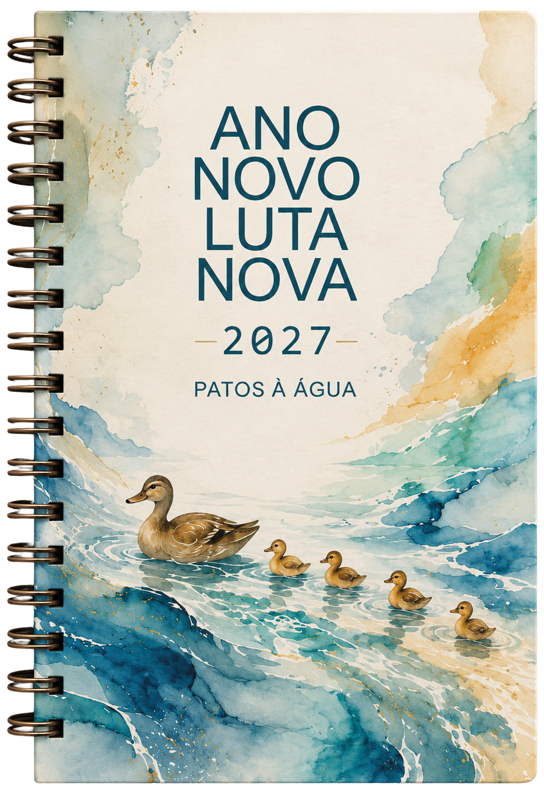

Coreografia com Ponto de Âncora Físico:
1. Entrada sobreposta na posição da agenda azul → 2. Arrasta para o lado até o ponto de âncora parar na base → 3. Ponto de âncora fica fixo e a agenda
apenas gira em leque
para abrir na posição final do print!
▶ Disparar Animação Leque
Posição Final Fixa
Mostrar Ponto de Âncora Vermelho (Simulação do Print)
Comparar com Imagem Original (50% transparência)



Agenda 2027
R$ 109,90
Comprar Agora